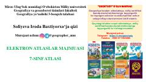

GA7-sinf geografiya fani uchun mo'ljallangan o'quv atlas va xaritalar to'plami.
Ushbu atlas 7-sinf geografiya fanini o'rganuvchi o'quvchilar uchun mo'ljallangan o'quv qo'llanmasidir. Unda geografik xaritalar va mavzuga oid vizual ma'lumotlar jamlangan bo'lib, davlat imtihonlari hamda milliy sertifikatga tayyorgarlik ko'rishda yordam beradi.